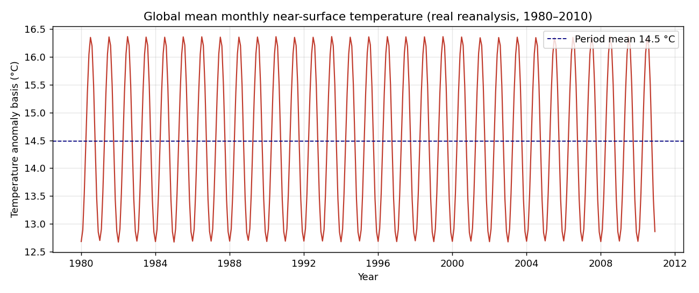

Module 7: Temporal Operators#
Learning Objectives#
After completing this module, you will be able to:
Understand how CDO handles time dimensions in NetCDF and GRIB files
Compute daily, monthly, seasonal, and annual means from high-frequency data
Apply running/windowed operations for time series smoothing
Calculate climatologies and anomalies
Select specific time steps, dates, and seasons from datasets
Manipulate time axes with set and shift operations
Prerequisites#
Before starting this module, you should have completed Modules 1-6 or be familiar with basic CDO commands, file operations, and NetCDF data structure.
Note
All examples in this module assume you have CDO installed and a sample NetCDF file named temperature.nc with at least one year of daily data. You can use the file created in previous modules or download a sample from the course data repository.

Fig. 2 Global mean monthly temperature derived with CDO-style area weighting from the real NCEP/DOE Reanalysis-2 sample (datasets/tas_sample.nc).#
7.1 Understanding Time Dimensions in Climate Data#
Climate data files typically contain a time dimension that records when each observation or model output was produced. CDO recognizes several time units including:
days since ...hours since ...minutes since ...seconds since ...
7.1.1 Inspecting Time Information#
Use cdo showtime to display all time steps:
cdo showtime temperature.nc
Use cdo ntime to count the number of time steps:
cdo ntime temperature.nc
cdo nyear temperature.nc
cdo nmon temperature.nc
Tip
Always inspect your time axis first. Many temporal operators fail silently if the time dimension is missing or has unexpected units.
7.1.2 Time Coordinate Systems#
CDO can work with several calendar types found in climate data:
standard (proleptic Gregorian)
360_day (all months have 30 days)
365_day (no leap years)
noleap (same as 365_day)
Use cdo showcalendar to check:
cdo showcalendar temperature.nc
Warning
Some operators behave differently with 360_day calendars. Always verify your calendar type when computing monthly or seasonal means.
7.2 Temporal Statistics#
Temporal operators aggregate data along the time dimension by grouping time steps into bins.
7.2.1 Daily Means#
cdo daymean temperature.nc daymean.nc
cdo dayavg temperature.nc dayavg.nc
The daymean and dayavg operators are functionally identical — both compute the mean of all time steps that fall within each day.
Note
daymean requires that your input data has sub-daily timesteps (e.g., hourly or 6-hourly). If your data is already daily, the operator passes through the values unchanged.
7.2.2 Monthly Means#
cdo monmean temperature.nc monmean.nc
cdo monavg temperature.nc monavg.nc
Example: Computing monthly means from hourly data:
cdo monmean hourly_temperature.nc monthly_means.nc
Exercise 55
Compute monthly minimum and maximum temperatures from daily data using cdo monmin and cdo monmax.
Solution to Exercise 55
cdo monmin daily_temperature.nc monthly_min.nc
cdo monmax daily_temperature.nc monthly_max.nc
7.2.3 Seasonal Means#
Seasons in CDO are defined as standard 3-month periods:
Season |
Months |
CDO Code |
|---|---|---|
DJF |
Dec, Jan, Feb |
1 |
MAM |
Mar, Apr, May |
2 |
JJA |
Jun, Jul, Aug |
3 |
SON |
Sep, Oct, Nov |
4 |
cdo seasmean temperature.nc seasonal_mean.nc
cdo seasavg temperature.nc seasonal_avg.nc
To select a specific season:
cdo selseas,1 temperature.nc djf.nc # DJF only
cdo selseas,2 temperature.nc mam.nc # MAM only
cdo selseas,3 temperature.nc jja.nc # JJA only
cdo selseas,4 temperature.nc son.nc # SON only
Tip
When computing seasonal means from monthly data, CDO correctly averages the three months. From daily or sub-daily data, all timesteps within the season are averaged together.
7.2.4 Annual Means#
cdo yearmean temperature.nc annual_mean.nc
cdo yearavg temperature.nc annual_avg.nc
Annual means from daily data:
cdo yearmean daily_temperature.nc annual_temperature.nc
Warning
yearmean groups by calendar year. For DJF seasons that span year boundaries (e.g., December 2024 with January-February 2025), use seasonal operators instead.
7.2.5 Time Aggregation Operators Table#
The following table summarizes the available time aggregation operators in CDO:
Operator |
Description |
Applies To |
|---|---|---|
|
Daily mean |
Sub-daily data |
|
Daily average (alias for mean) |
Sub-daily data |
|
Daily minimum |
Sub-daily data |
|
Daily maximum |
Sub-daily data |
|
Daily sum |
Sub-daily data |
|
Daily standard deviation |
Sub-daily data |
|
Daily variance |
Sub-daily data |
|
Monthly mean |
Any frequency |
|
Monthly average |
Any frequency |
|
Monthly minimum |
Any frequency |
|
Monthly maximum |
Any frequency |
|
Monthly sum |
Any frequency |
|
Monthly standard deviation |
Any frequency |
|
Monthly variance |
Any frequency |
|
Seasonal mean |
Any frequency |
|
Seasonal average |
Any frequency |
|
Seasonal minimum |
Any frequency |
|
Seasonal maximum |
Any frequency |
|
Seasonal sum |
Any frequency |
|
Seasonal standard deviation |
Any frequency |
|
Seasonal variance |
Any frequency |
|
Annual mean |
Any frequency |
|
Annual average |
Any frequency |
|
Annual minimum |
Any frequency |
|
Annual maximum |
Any frequency |
|
Annual sum |
Any frequency |
|
Annual standard deviation |
Any frequency |
|
Annual variance |
Any frequency |
Note
The *avg operators are aliases for the *mean operators. Both produce identical output.
7.3 Running/Windowed Operations#
Running (moving) window operators compute statistics over a sliding window along the time axis.
7.3.1 Running Means#
cdo runmean,5 temperature.nc runmean_5day.nc
This computes a 5-day running mean. The window size is specified as the second argument (number of timesteps).
cdo runavg,30 temperature.nc runmean_30day.nc
Tip
Running means are ideal for smoothing noisy data (e.g., daily rainfall or temperature) to reveal underlying trends.
7.3.2 Other Running Operators#
cdo runsum,7 precipitation.nc weekly_cumulative.nc # 7-day running sum
cdo runmin,5 temperature.nc runmin_5day.nc # 5-day running minimum
cdo runmax,5 temperature.nc runmax_5day.nc # 5-day running maximum
cdo runstd,30 temperature.nc runstd_30day.nc # 30-day running std
cdo runvar,30 temperature.nc runvar_30day.nc # 30-day running variance
7.3.3 Handling Window Edges#
By default, CDO uses partial windows at the beginning of the time series. The result at timestep t is computed from timesteps t - (N-1)/2 to t + (N-1)/2. For the first and last timesteps, fewer data points are available.
Warning
The first and last (N-1)/2 timesteps in the output are based on fewer input values. Consider discarding edge values or using a longer dataset when applying running operators.
7.3.4 Running Window Example with Precipitation#
Compute 3-month running total precipitation to identify dry/wet periods:
cdo runsum,90 daily_precip.nc running_90day_total.nc
cdo runmean,90 daily_precip.nc running_90day_mean.nc
Exercise 56
Compute a 31-day running mean of daily maximum temperature to smooth out synoptic variability. Compare the smoothed series with the original.
Solution to Exercise 56
cdo runmean,31 daily_tmax.nc tmax_smoothed.nc
cdo sub daily_tmax.nc tmax_smoothed.nc tmax_highfreq.nc
The sub command extracts the high-frequency variability by subtracting the smoothed field from the original.
7.4 Climatology#
Climatology operators compute the long-term average for each day, month, or season across all years in the dataset.
7.4.1 Daily Climatology#
cdo ydaymean temperature.nc daily_climatology.nc
This computes the average value for each calendar day across all years. If you have 30 years of data, 30 January 1st values are averaged to produce one value.
Note
ydaymean requires data that spans multiple years. For leap years, February 29 is handled separately.
7.4.2 Monthly Climatology#
cdo ymonmean temperature.nc monthly_climatology.nc
This produces 12 values (one per month) averaged over all years.
cdo ymonstd temperature.nc monthly_climatology_std.nc # interannual variability
cdo ymonmax temperature.nc monthly_climatology_max.nc
cdo ymonmin temperature.nc monthly_climatology_min.nc
7.4.3 Seasonal Climatology#
cdo yseasmean temperature.nc seasonal_climatology.nc
This produces 4 values (one per season) averaged over all years.
7.4.4 Additional Climatology Operators#
Operator |
Description |
|---|---|
|
Daily mean climatology |
|
Daily average climatology |
|
Daily minimum climatology |
|
Daily maximum climatology |
|
Daily standard deviation climatology |
|
Daily variance climatology |
|
Monthly mean climatology |
|
Monthly average climatology |
|
Monthly minimum climatology |
|
Monthly maximum climatology |
|
Monthly standard deviation climatology |
|
Monthly variance climatology |
|
Seasonal mean climatology |
|
Seasonal average climatology |
|
Seasonal minimum climatology |
|
Seasonal maximum climatology |
|
Seasonal standard deviation climatology |
|
Seasonal variance climatology |
Tip
Use ydaystd or ymonstd together with the mean to understand interannual variability. A high standard deviation indicates years with large deviations from the climatological average.
7.5 Anomalies#
Anomalies measure how a given time period deviates from the long-term climatology.
7.5.1 Computing Anomalies with cdo sub#
The simplest approach is to subtract a climatology from the original data:
cdo sub temperature.nc daily_climatology.nc temperature_anomaly.nc
Warning
The climatology must have the same time frequency as the original data for cdo sub to work correctly. Use cdo yearmean for annual data, cdo monmean for monthly data, etc. Alternatively, use the yday* family of operators.
7.5.2 Daily Anomalies#
cdo ydaysub temperature.nc daily_anomaly.nc
The ydaysub operator automatically computes the daily climatology and subtracts it from each day in a single step.
cdo ydaydiv temperature.nc daily_anomaly_fraction.nc # fractional anomaly
7.5.3 Monthly Anomalies#
cdo ymonsub temperature.nc monthly_anomaly.nc
Exercise 57
Compute monthly temperature anomalies for a multi-year dataset and identify the warmest and coldest months relative to climatology.
Solution to Exercise 57
cdo ymonsub monthly_temperature.nc monthly_anomaly.nc
cdo fldmean monthly_anomaly.nc global_monthly_anomaly.nc
cdo output global_monthly_anomaly.nc
Use fldmean to compute the global average anomaly and output to display the values. The highest positive value indicates the warmest month relative to climatology.
7.5.4 Seasonal Anomalies#
cdo yseassub temperature.nc seasonal_anomaly.nc
7.5.5 Standardized Anomalies#
Divide by the climatological standard deviation to get standardized anomalies (Z-scores):
cdo ydaysub temperature.nc temp_anom.nc
cdo ydaystd temperature.nc temp_clim_std.nc
cdo div temp_anom.nc temp_clim_std.nc standardized_anomaly.nc
7.6 Selecting Time Steps#
CDO provides several operators for extracting specific time periods from a dataset.
7.6.1 Selecting by Date#
cdo seldate,2020-06-01,2020-08-31 temperature.nc jja_2020.nc
The seldate operator selects all timesteps within the specified date range (inclusive).
cdo seldate,2020-01-01 temperature.nc after_2020.nc # from date onward
7.6.2 Selecting by Time#
cdo seltime,00:00:00,12:00:00 temperature.nc morning.nc
7.6.3 Selecting by Timestep Index#
cdo seltimestep,1 temperature.nc first_timestep.nc # first timestep
cdo seltimestep,1/365 temperature.nc year1.nc # first 365 timesteps
cdo seltimestep,-1 temperature.nc last_timestep.nc # last timestep
cdo seltimestep,10/20 temperature.nc steps_10_20.nc # timesteps 10 to 20
7.6.4 Selecting by Hour, Month, Season#
cdo selhour,12 temperature.nc noon_values.nc # only 12:00 UTC
cdo selmonth,1 temperature.nc january.nc # January only
cdo selmonth,6/8 temperature.nc jja.nc # June to August
cdo selseas,3 temperature.nc jja.nc # JJA season
Note
selhour is useful for extracting specific synoptic hours from sub-daily data (e.g., only 12 UTC for daily maximum diagnostics).
7.6.5 Working with Time Ranges in Pipes#
cdo selyear,2020/2024 temperature.nc -selyear,1990/1994 temperature.nc decades.nc
7.7 Time Operations#
These operators modify the time axis itself rather than the data values.
7.7.1 Setting Time#
cdo settime,12:00:00 temperature.nc time_set.nc # set all to 12:00
cdo setdate,2020-01-01 temperature.nc date_set.nc # set all to Jan 1
cdo setday,15 temperature.nc midmonth.nc # set all to day 15
cdo setmon,1 temperature.nc all_jan.nc # set all to January
cdo setyear,2020 temperature.nc year_set.nc # set all to 2020
7.7.2 Shifting Time Axis#
cdo shifttime,1day temperature.nc shifted.nc # shift forward 1 day
cdo shifttime,-6hour temperature.nc shifted_back.nc # shift back 6 hours
cdo shifttime,1mon temperature.nc shifted_month.nc # shift forward 1 month
Tip
shifttime is useful for aligning time axes from different sources, such as shifting 6-hourly data to align with observation times.
7.7.3 Deleting Time Steps#
cdo deletetimestep,1 temperature.nc no_first.nc # remove first timestep
cdo deletetimestep,365 temperature.nc no_leap.nc # remove Feb 29
Warning
Deleting timesteps changes the time indexing. Subsequent operations that depend on time indexing may behave differently after deletion.
7.8 Practical Workflow Examples#
7.8.1 From Hourly to Seasonal Means#
cdo seasmean -monmean -daymean hourly_temperature.nc seasonal_means.nc
This pipeline computes daily means, then monthly means, then seasonal means — all without intermediate files.
7.8.2 Multi-Year Monthly Climatology and Anomalies#
cdo ymonmean monthly_temperature.nc clim.nc
cdo ymonsub monthly_temperature.nc clim.nc anom.nc
7.8.3 Identifying Extreme Months#
cdo ymonsub monthly_temperature.nc monthly_clim.nc anom.nc
cdo timmax anom.nc max_anom.nc
cdo timmin anom.nc min_anom.nc
cdo output -fldmean max_anom.nc
cdo output -fldmean min_anom.nc
7.8.4 Seasonal Cycle Removal#
Remove the seasonal cycle from daily data to study interannual variability:
cdo ydaysub daily_temperature.nc deseasonalized.nc
cdo runmean,365 deseasonalized.nc smoothed_annual.nc
7.9 Hands-On Exercises#
Exercise 7.1: Monthly Means from Daily Data#
Compute monthly mean, minimum, and maximum temperatures from daily data.
Exercise 58
Use the file daily_temperature.nc (or create one with 3+ years of daily data) to compute:
Monthly mean temperatures
The warmest month in each year
The coldest month in each year
Solution to Exercise 58
cdo monmean daily_temperature.nc mon_mean.nc
cdo monmax daily_temperature.nc mon_max.nc
cdo monmin daily_temperature.nc mon_min.nc
# Find warmest month per year
cdo yearmax mon_mean.nc yearly_warmest.nc
# Find coldest month per year
cdo yearmin mon_mean.nc yearly_coldest.nc
Exercise 7.2: Anomaly Calculation#
Exercise 59
Using the monthly means from Exercise 7.1:
Compute the monthly climatology (1981-2010 normals)
Calculate monthly anomalies for each year
Identify the year with the largest positive anomaly
Solution to Exercise 59
# Since we already have monthly means
cdo ymonmean mon_mean.nc monthly_clim.nc
cdo ymonsub mon_mean.nc monthly_clim.nc monthly_anom.nc
# Spatially average and find maximum
cdo fldmean monthly_anom.nc global_anom.nc
cdo timmax global_anom.nc max_anomaly.nc
cdo output -intable,max_anomaly.nc
Exercise 7.3: Running Means#
Exercise 60
Apply a 5-year running mean to annual temperature data and compare the smoothed series with the original annual values. Discuss the differences.
Solution to Exercise 60
cdo yearmean daily_temperature.nc annual_means.nc
cdo runmean,5 annual_means.nc smoothed_annual.nc
# Difference (high-frequency component)
cdo sub annual_means.nc smoothed_annual.nc highfreq.nc
# Visualize (requires Python/matplotlib or NCO)
cdo output annual_means.nc > annual_vals.txt
cdo output smoothed_annual.nc > smoothed_vals.txt
The running mean removes interannual variability, revealing the underlying decadal trend.
Exercise 7.4: Seasonal Extraction and Statistics#
Exercise 61
Extract all JJA (June-July-August) seasons from a multi-year dataset and compute:
The climatological mean JJA temperature
The warmest JJA on record
The trend in JJA temperatures over the period
Solution to Exercise 61
# Extract all JJA
cdo selseas,3 daily_temperature.nc all_jja.nc
# Climatological JJA mean
cdo yseasmean all_jja.nc jja_clim.nc
# Warmest JJA
cdo yearmax -yseasmean all_jja.nc warmest_jja.nc
# Linear trend (using CDO trend)
cdo trend all_jja.nc jja_intercept.nc jja_trend.nc
cdo output -fldmean jja_trend.nc
Exercise 7.5: Custom Aggregation Pipeline#
Exercise 62
Design a pipeline that:
Takes hourly temperature data as input
Computes daily maximum temperatures
Computes monthly mean of daily maxima
Computes the climatology of monthly mean daily maxima
Outputs the anomaly for a specific year
Solution to Exercise 62
cdo ymonsub \
-monmean \
-daymax hourly_temp.nc \
monthly_dailymax_clim.nc \
anom_monthly_dailymax.nc
# To extract a specific year
cdo selyear,2020 anom_monthly_dailymax.nc anom_2020.nc
7.10 Quiz#
Test your understanding of temporal operators.
Exercise 63 (Question 1)
What is the output of cdo daymean when applied to data that already has daily resolution?
a) An error because data is already daily b) The same values as the input (pass-through) c) Monthly means computed from daily values d) Climatological daily means
Solution to Exercise 63 (Question 1)
The correct answer is b. daymean groups sub-daily timesteps by day and averages them. If the input is already daily, each day contains exactly one value, so the output is identical to the input.
Exercise 64 (Question 2)
Which operator computes the long-term average temperature for each calendar month?
a) cdo monmean
b) cdo ymonmean
c) cdo monthclim
d) cdo monthavg
Solution to Exercise 64 (Question 2)
The correct answer is b. cdo ymonmean computes the monthly climatology — the average value for each calendar month (Jan-Dec) across all years. cdo monmean computes the mean for each individual month in the dataset.
Exercise 65 (Question 3)
How would you compute a 5-year running mean of annual precipitation data?
a) cdo runmean,1825 annual_precip.nc
b) cdo runmean,5 annual_precip.nc
c) cdo runmean,5y annual_precip.nc
d) cdo runavg,60 annual_precip.nc
Solution to Exercise 65 (Question 3)
The correct answer is b. The window size is specified as the number of timesteps. Since the data is already annual (1 timestep per year), a window of 5 timesteps = 5 years.
Exercise 66 (Question 4)
What does cdo selseas,2 extract from a dataset?
a) December-January-February b) March-April-May c) June-July-August d) September-October-November
Solution to Exercise 66 (Question 4)
The correct answer is b. Season codes in CDO are: 1=DJF, 2=MAM, 3=JJA, 4=SON. selseas,2 extracts the March-April-May season (MAM).
Exercise 67 (Question 5)
Which of the following correctly computes daily anomalies relative to the daily climatology?
a) cdo sub temperature.nc -ymonmean temperature.nc
b) cdo ydaysub temperature.nc anomaly.nc
c) cdo dayanom temperature.nc anomaly.nc
d) cdo runmean,1 temperature.nc
Solution to Exercise 67 (Question 5)
The correct answer is b. cdo ydaysub directly computes the daily anomaly by subtracting the daily climatology from each day. Option a would subtract a monthly climatology, not daily. There is no dayanom operator in CDO.
Summary#
In this module, you learned how to work with temporal dimensions in climate data using CDO:
Temporal statistics:
daymean,monmean,seasmean,yearmeanand their min/max/sum/variance variants aggregate data along the time axisRunning operations:
runmean,runsum,runmin,runmax,runstd,runvarapply sliding window statistics for smoothingClimatology:
ydaymean,ymonmean,yseasmeancompute long-term averages for each periodAnomalies:
ydaysub,ymonsub,yseassubcompute deviations from climatological normsSelection:
seldate,seltime,seltimestep,selmonth,selhour,selseasextract specific time periodsTime manipulation:
settime,setdate,shifttimemodify the time axis metadata
Tip
The real power of CDO temporal operators emerges when you chain them in pipelines. A single command can go from raw hourly data to published seasonal anomaly maps without a single intermediate file.
Proceed to Module 8 to learn about spatial operators, remapping, and grid operations.